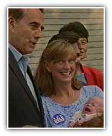
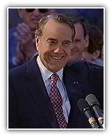

Dole for President
"My campaign is about telling the truth," he said when he announced his retirement. "It's about doing what is right. It's about electing a President who is not attracted to the glories of the office, but rather to its difficulties. It's about electing a President who, once he takes office, will keep his perspective, and remain - by his deepest nature and inclination - one of the people."
As President of the United States, Bob Dole will fight for more opportunities, smaller government, and stronger and safer families. He will balance the budget. He will cut taxes and reduce wasteful spending. He will make America safe by putting the rights of victims over those of the criminals who assault them. He will allow parents to choose the public school that is best for their children. And he will give the power of the government back to the states and the people.
Bob
Dole: An ordinary man. An extraordinary
man.
In the end, Bob Dole is an ordinary man. And he's an extraordinary man. He speaks the common language, uses common sense, and stands for common decency. He works hard, tells the truth and does what is just plain right. Like no President since Lincoln, he will bring to the Presidency the values and principles of all Americans.
Bob Dole is the better man - for a better America.

More opportunities. Smaller government. Stronger and safer families
Homepage | Register | Volunteers | Donations
About the Team | Dole Interactive | Newsroom | The Dole Agenda | On the Campaign Trail | Get Involved
Originally Paid for by Dole Kemp '96 Campaign Committee
Original Web Design by Presage Internet Campaigns
To Learn more about Bob Dole, Please Visit the Dole Institute
This Web Site is Presented for Educational Purposes by 4President.org